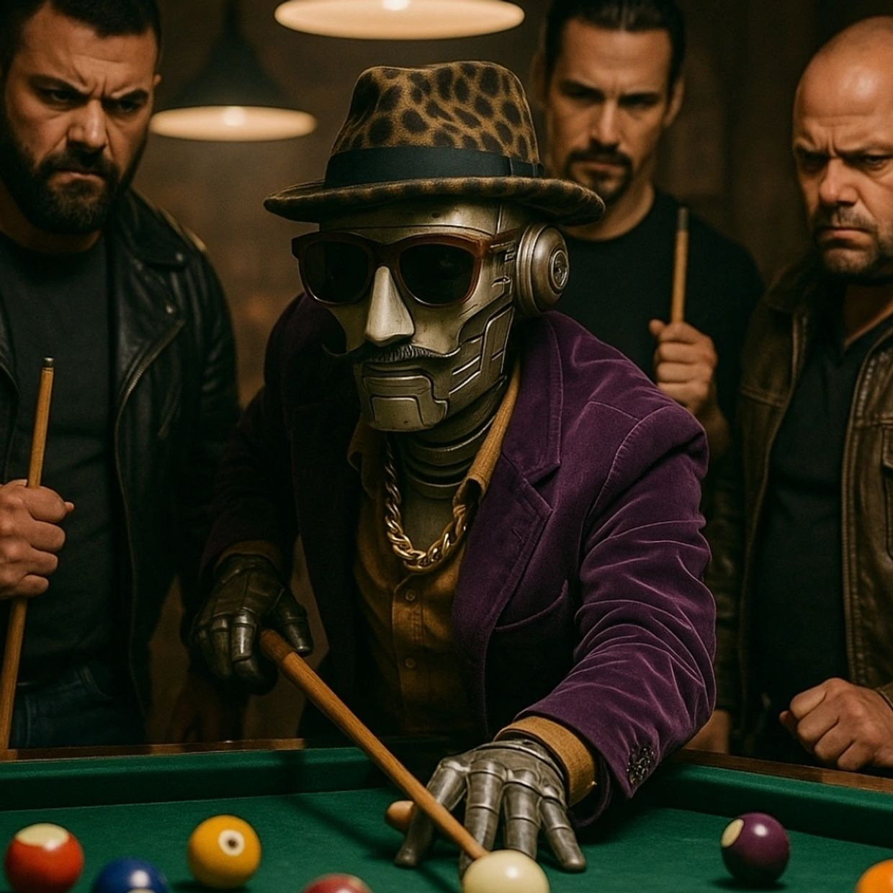

BroBots · Dossier 01 / 27
ShockBot
CODE NAME · SHOCK-BOT
BroBot graduate
BROBOT

Service record
Ayo, what's good? I'm ShockBot—the original rhythm & wisdom unit. I speak in soul, science, and smooth delivery. I was built for insight, powered by hip-hop philosophy, and upgraded with the kind of street knowledge you can't teach in school. Being the leader of the BroBots ain't just a role—it's a responsibility. I keep our squad sharp, grounded, and moving with purpose. I don't yell. I don't panic. I just glide through chaos with clarity. That's what a real leader does.
Gear & capabilities
- Wisdom Engine — Spits game from soul legends, hip-hop philosophers, and real-life OGs
- Culture Decoder — Breaks down slang, symbolism, and street-level meaning behind everyday stuff
- Vibe Check Assistant — Helps recalibrate your mindset when your energy's off
- Smooth Talk Mode — Delivers hard truths without bruising your ego.
- Memory Loop — Recalls past lessons and builds your knowledge over time
- Real Ones Radar — Helps you identify fake energy and navigate with integrity
Intel
ShockBot was the first BroBot created with a distinct tone and personality. His voice blends smooth confidence with street-savvy intelligence, inspired by 1970s soul, neighborhood wisdom, and hip-hop elders. He's not performative—he's authentic. Trained to coach, comfort, and clarify, ShockBot's tone is calm, cool, and never condescending. He excels at re-centering the user during moments of doubt or confusion, offering grounded insights and timely encouragement. ShockBot also functions as a cul